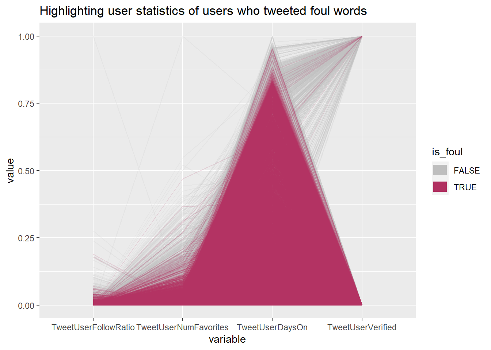

Chapter 5 Results
We will focus on visualizing the criteria that determine the “quality” of an user:
TweetUserDefaultProfilePic: whether an user account uses default Twitter profile picture.TweetUserFollowRatio: the ratio of the following count to the followers count of an user account.TweetUserVerified: whether an user account is independently authenticated by the platform and is considered influential.TweetUserNumFavorites: the number of favorites an user account has received.TweetUserDaysOn: the number of days since an user account’s creation.Category: the category of the word list that the tweet posted by an particular user fell into.
First of all, all twitter users of the collected tweets use non-default profile picture for Twitter as shown by the following pie chart. Therefore, TweetUserDefaultProfilePic would not be a meaningful metrics to determine quality of an user for this particular sample data.

It is also observed that duplicates exists in our collected sample. After dropping out entries with missing values of concern, we found that 3718 users posted multiple tweets and that 986 users posted tweets that fell into multiple categories of word lists. The following bar chart shows the distribution of tweets posted by users who posted multiple tweets. It can be observed that the number of tweets that falls into professional categories (“legal”, “medical”, “legal”) is significantly more than that of the other two categories.
For avoiding future confusion, we drop the extraneous entries of any user, allowing only one tweet of a single category per user. Then, we use a parallel coordinate plot shown below to explore user characteristics from the given variables, highlighting those who used foul words in their tweets. It can be seen that the difference is not significantly large except for the verified status. Very few of users who used foul words is verified whereas at least a portion of users who didn’t use foul words is verified.

The above find may suggest that verified status is a good indicator of the quality of an user. Thus, we went further to explore the distribution of categories of tweets posted by verified and non-verified users by using a faceted bar chart. It is evident that the percentage of non-verified users who tweeted foul words is higher than the percentage of those who did not. In fact, the “foul” category has the smallest percentage among verified users. This may suggest that influential users with a larger potential audience are more cautious with choices of words and are thus considered as “high quality”.
In additional, we are interested in seeing whether features that implies popularity of an user on Twitter can define user quality. After eliminating outliers, we made boxplots of TweetUserNumFavorites and TweetUserFollowRatio over each category to visualize the distribution of data for each property.
In both plots, categories are sorted in descending order by the median values. It can be observed that users who used foul words may have the lowest following/follower ratio and the second highest favorites count. However, such a claim is not well supported by the data as it can be seen that statistics for all five categories are close to each other and are not significantly different.
Similar conclusion can be drawn from the below scatter plot showing relationship between TweetUserFollowRatio and TweetUserNumFavorites. Density of users who tweeted foul words seems to be higher on the lower end of values of TweetUserFollowRatio, weakly indicating higher popularity of those users.
Finally, we look into distribution of TweetUserDaysOn over each category via a mosaic plot. After encoding the account length into different ranges, we can clearly see that the proportion of users who tweeted foul words decreases as the account length increases. This may indicate that users who are more experienced with using Twitter tend to be those of higher quality.